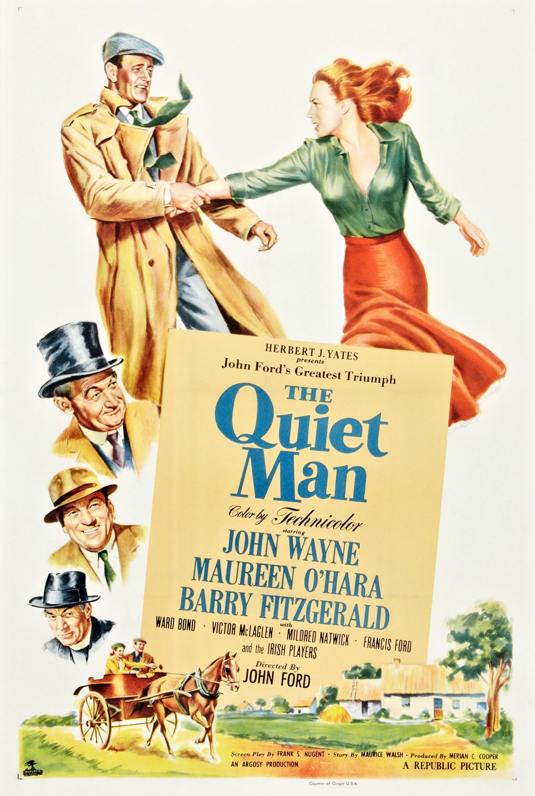

The Quiet Man
25th Academy Awards
(Oscars 1953)
7 Nominations, 2 Awards
| Nominations | ||
|---|---|---|
| Category | Nominees | Result |
| Best Motion Picture | John Ford and Merian C. Cooper | Nominated |
| Actor in a Supporting Role | Victor McLaglen | Nominated |
| Directing | John Ford | Won |
| Writing (Screenplay) | Frank S. Nugent | Nominated |
| Cinematography (Color) | Archie Stout and Winton C. Hoch | Won |
| Art Direction (Color) | Charles Thompson, Frank Hotaling, and John McCarthy, Jr. | Nominated |
| Sound Recording | Daniel J. Bloomberg | Nominated |